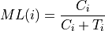

bam2dm
Description
Calculate DNA methylation level from alignment files, you can obtained single-base cytosine DNA methylation results, and the chromosome region DNA methylation levels files.
To calculate the methylation density, we first count the total number of C/T nucleotides that overlap with each cytosine site on the plus strand and the number of G/A nucleotides on the minus strand. Those cytosines, which are used for further statistical analysis, should meet the criterion that their depth (C plus T) should be more than some predefined threshold (by default, 5) to reduce the influence of sequencing errors in the cytosine site.
We calculate the methylation level of postion  () by the following equation:
() by the following equation:

Usage
An example usage is:
with bam file:
dmtools bam2dm [options] -g genome.fa -b alignment.sort.bam -m output.methrario.dm
Important
The sam or bam file MUST sorted by samtools sort.
Paramaters
[ Main paramaters ] |
||
|---|---|---|
-m/--methratio |
[MethFileNamePrefix] Predix of methratio output file (dm) |
|
--genome/-g |
Name of the genome mapped against, MUST build index first bdindex |
|
-i/--input |
Sam format file, sorted by samtools sort. |
|
-b/--binput |
Bam format file, sorted by samtools sort. |
|
-Q [int] |
caculate the methratio while read QulityScore >= Q. default:20 |
|
-n [float] |
Number of mismatches, default 0.06 percentage of read length. [0-1] |
|
-c|--coverage |
>= <INT> coverage. default:4 |
|
-nC |
>= <INT> Cs per region. default:1 |
|
-r/--remove_dup |
REMOVE_DUP, default:true |
|
--zl |
The maximum number of zoom levels. [1-10], default: 2 |
|
-as [0/1] |
If print calculated alignment reads in sam/bam file. default:0 |
|
--mrtxt |
also print prefix.methratio.txt file |
|
--help/-h |
Print help |
|
Output files
1. prefix.methratio.dm (binary file with index, view and processed with dmtools)
Output file format
1. methratio.dm (binary file, view and processed with dmtools)
Chromosome Loci (end) methlevel CT_count Strand Context
# ex. dmtools view -i test.mr.dm -r Chr1:61-61
# ex. Chr1 61 0.286364 11 + CHH
# CT_count The number of coverage in this base pair.
# BigWig for genome browser, suggest with end col.
Tip
For feature requests or bug reports please open an issue on github.